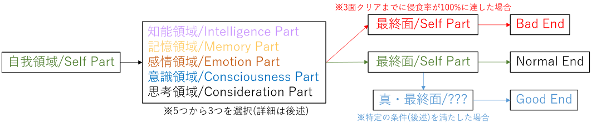
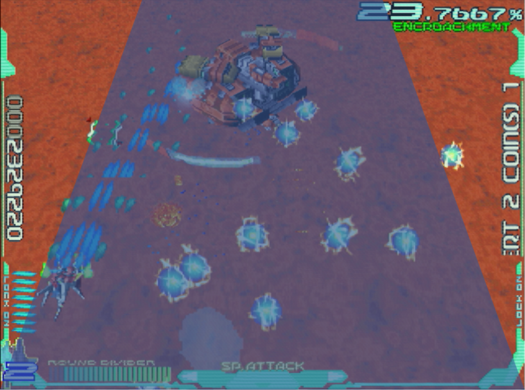

基本要素
このゲームは、デフォルト2機＋隠し1機のいずれかで選択したマップを攻略します。工場出荷設定では残機を3つストックし、エクステンドはありません。
進行を大雑把にまとめると、以下の通りです。
ユーザーデータ
大きな特徴の1つ、ユーザーデータについて説明します。記録を積み重ねる事で、真の姿が見えてくる。
マップセレクト
本作の進行ルートは、1つじゃありません。好みに合わせ、取捨選択していきましょう。
自機性能
どの自機を使うかも、重要なポイントです。汎用性か、爆発力か、はたまた手軽さか・・・。
侵食率
ゲーム展開をダイナミックに変えるシステムです。上手く使えば、ゲーム自体を操作できます。
ハーフトップビュー
このゲームは斜め上から見下ろす形式を取っており、奥行きの概念があります1。
手前は大きく・速く、奥に行くほど小さく・遅く感じますが、それはグラフィックの拡縮によるものです。結果として、自機の移動範囲は・・・
このくらいです。むろん、敵や弾は移動範囲外からも襲ってきます。奥行きの性質上、手元ほど加速する点も意識しましょう。
1. 厳密に言うと、初代「RAYFORCE」からありました。地上の敵弾が浮かび上がってくる辺りで分かります ↩